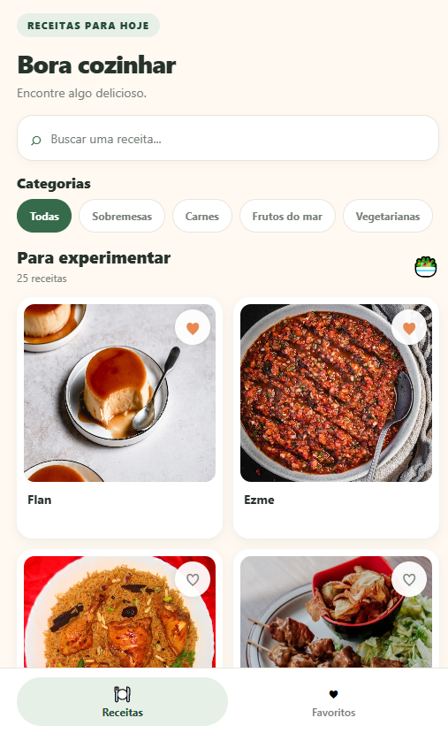
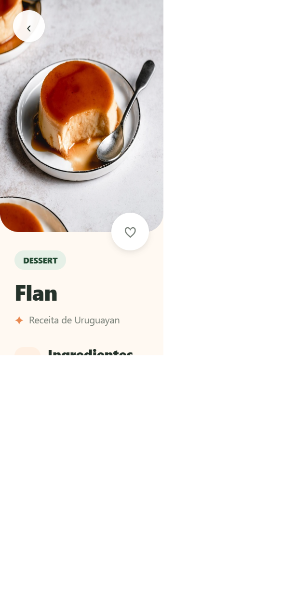
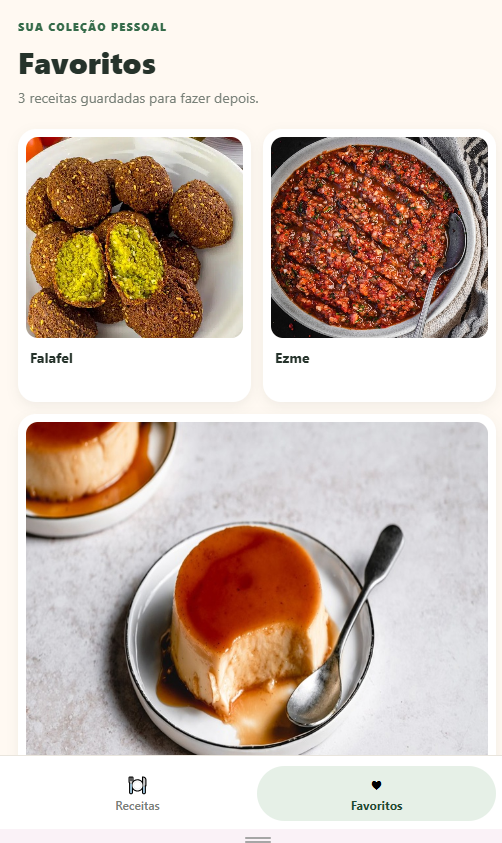

Descobrir
Receitas reais carregadas da TheMealDB.
Projeto final · Aplicações móveis
Um app mobile para descobrir, explorar e guardar receitas da TheMealDB.
Projeto Final 1 TheMealDB · React Native + Expo
João Vítor Vieira Martins · Júlio César Fernandes · Jhonathan Carvo · William Tavares de Moura
01 · Problema e proposta
Criamos uma experiência mobile que transforma uma API pública em uma coleção prática de receitas para explorar e revisitar.
Receitas reais carregadas da TheMealDB.
Busca, categorias, ingredientes e preparo.
Favoritos preservados no dispositivo.
02 · Lista, busca e categorias

03 · Detalhe da receita

04 · Favoritos
Favoritos ficam salvos localmente e continuam disponíveis depois de fechar e reabrir o aplicativo.

05 · Arquitetura
React Native com Expo · TypeScript · estado local com hooks do React.
06 · Estados e testes
Carregando, lista vazia e erro de rede têm tratamento próprio.
6 testes para filtros, mapeamento da API, erros e persistência de favoritos.
Lista, detalhes e favoritos compartilham cores, cartões e navegação.
A API é pública; os favoritos são locais ao dispositivo.
07 · Validação técnica
Todos os testes automatizados passaram.
Verificação de tipos e compatibilidade de dependências aprovadas.
Resultado do npm audit após correções compatíveis.
Build debug arm64-v8a compilado com sucesso.
08 · Decisões e próximos passos
O resultado é um app mobile funcional, testado e documentado, usando dados reais e gratuitos.
09 · Encerramento
Buscar → filtrar → abrir → favoritar → conferir persistência.
Reservamos cerca de 2 minutos ao final.
Repositório: github.com/25823900/projeto-final-themealdb-react-native